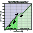
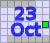
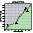
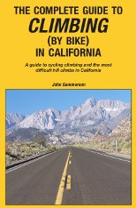

|
|
Welch Creek Rd (Genti photo)
| week | day | climb | previous years | comment | |||
|---|---|---|---|---|---|---|---|
| 1 | Montebello | 1995(1) 1996(1) 1997(1) 2006(1) 2007(1) 2008(1) 2009(1) |
traditional opener! | ||||
| 2 | OLH | 1995(4) 1996(X) 2006(2) 2009(2) | classic benchmark! | ||||
| 3 | Portola State Park | new! | through redwoods! |  | |||
| 4 |  | 1995(12) 2007(8) | TOC connection! | ||||
| 5 | E. Dunne Ave | 1995(11) | Winter Series classic! | ||||
| 6 | 2007(6) | Oh, my! |  | ||||
| 7 | Bonny Doon - Pine Flat | new! | TOC connection! | ||||
| 8 | 1996(8) | Umunhum challenge! | |||||
| 9 | Mt Hamilton | 1995(8) 1996(9) 1997(9) 1998(1) 1998(7) 2006(7) 2007(9) 2008(9) 2009(9) |
Thanksgiving tradition! |
| llumix, as well as our volunteers, photographs the 2010 Low-Key Hillclimbs!!! |
Sorry, folks! Our insurance requires all riders wear helmets during the climb, and we follow the USA Cycling rule against ear buds or other head phones. Rock to tunes before the climb, perhaps, but we need riders to pay attention to what's happening during the climb...
You asked for them and now we have them! Low-Key socks. Check 'em out here Only $10 a pair, free to coordinators and "the regular" volunteer crew!
Each week, registration will open an hour before the listed time, closing 15 minutes before. voluntary donation, volunteers get 2 weeks free, under 18 years old are free, coordinators are free! Waivers available at registration. Two free entries if you volunteer.
Unfortunately this week's climb is closed. Check back after the climb or next week's RSVP form!
Then, if you can, you'll want to print and fill out the PDF release form before the event.
|  |
| John Sommerson's excellent Complete Guide to Climbing by Bike series, including Guide to Climbing in California, is a 2010 Low-Key sponsor!!! |
Volunteers are what make the Low-Key series work! Here's a list of volunteers so far. It's a great chance to give back to other rider. We always need more volunteers, but especially can use them for week 1. Volunteers get two free, transferrable climbing credits, and may have volunteer weeks credited with an average score from climbs ridden (see rules). Sign up using our new volunteer form!
Low-Key donates all funds collected to the Lance Armstrong Foundation, the Peninsula Open Space Trust, or to charities related to a particular week's climb
If you're curious how speed up a Low-Key climb relates to propulsive power, check out Tim Clark's time-power calculator. Or, if you want a more detailed calculation, upload GPS data to his TCX-to-power calculator!
An email list is our primary communications channel: http://sports.groups.yahoo.com/group/lkhc.
We're also have a Low-Key group on Facebook It's the place to be for facebookie type stuff.
Detailed scoring information is available for those whoy want to know the nitty-gritty!
Rating of the climbs calculated using the special Low-Key Hillclimbs rating formula are available here!
Email Dan Connelly